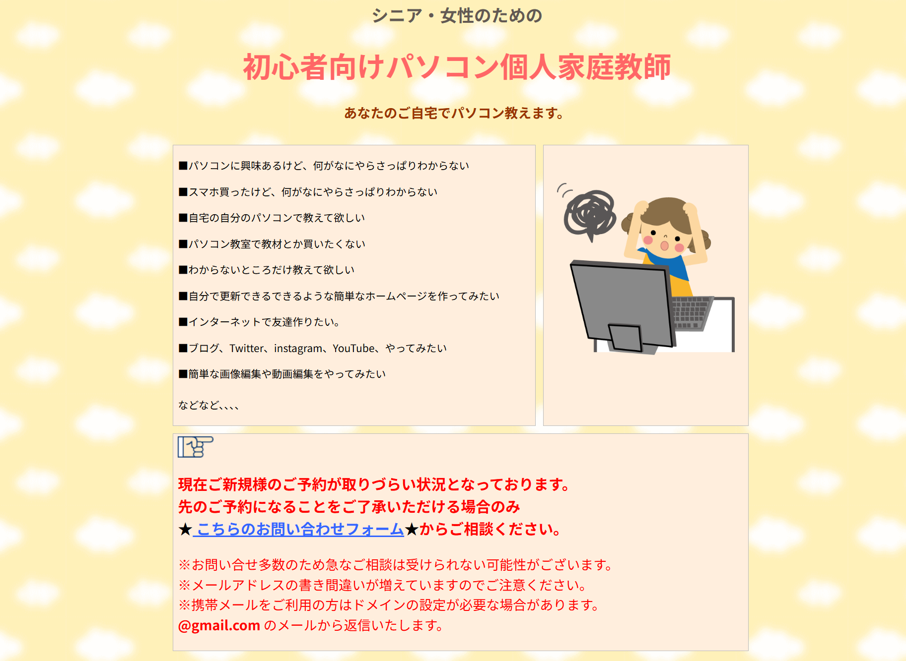
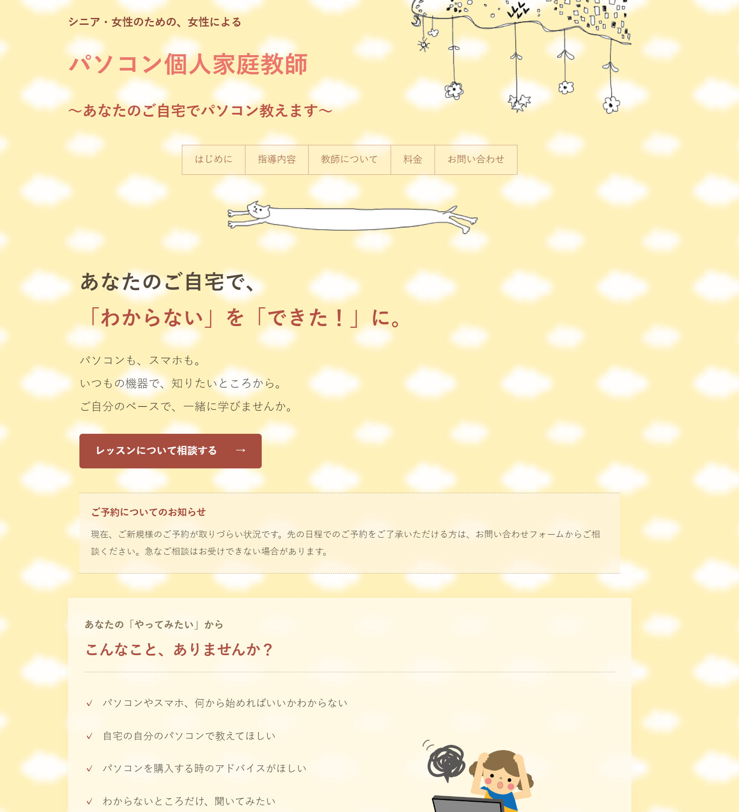

01
事業用Webサイトを、
事業用Webサイト / 制作・リニューアル
事業用Webサイトを、
新しいかたちへ。
HTML・CSSで制作した自身の事業用Webサイトを、ChatGPTを活用してリニューアルしました。
パソコン初心者やシニアの方にもサービス内容がわかりやすく伝わるよう、情報を整理し、LPを意識した構成にしました。
文字の読みやすさや操作のわかりやすさを重視し、スマートフォンにも対応しています。



